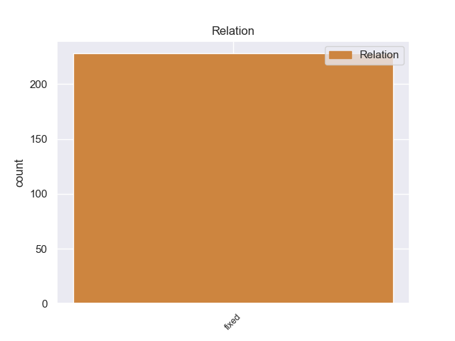
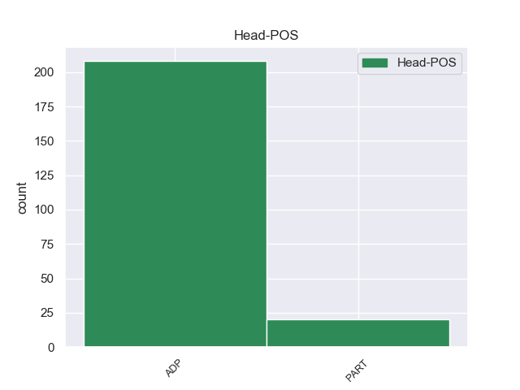
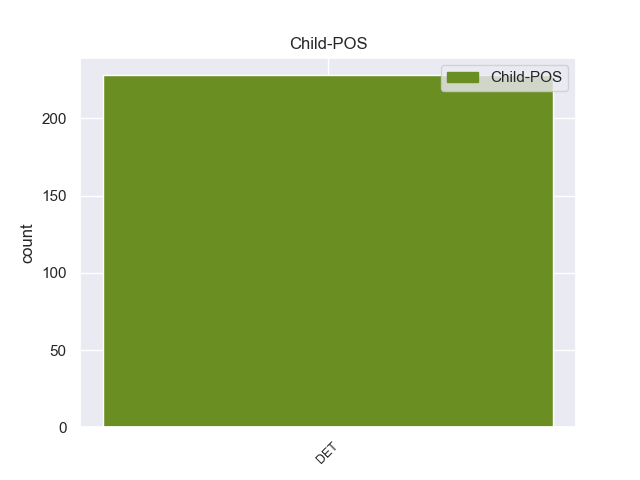

Distribution of features within this leaf



non-conforming Examples:
1 Своевременно _ _ _ _ 0 _ _ _
2 исправлять _ _ _ _ 0 _ _ _
3 повреждения _ _ _ _ 0 _ _ _
4 не _ _ _ _ 0 _ _ _
5 удавалось _ _ _ _ 0 _ _ _
6 по _ _ _ _ 0 _ _ _
7 трем _ _ _ _ 0 _ _ _
8 причинам _ _ _ _ 0 _ _ _
9 : _ _ _ _ 0 _ _ _
10 во-первых _ _ _ _ 0 _ _ _
11 , _ _ _ _ 0 _ _ _
12 заявка _ _ _ _ 0 _ _ _
13 на _ _ _ _ 0 _ _ _
14 специалистов _ _ _ _ 0 _ _ _
15 , _ _ _ _ 0 _ _ _
16 посланная _ _ _ _ 0 _ _ _
17 за _ _ _ _ 0 _ _ _
18 номером _ _ _ _ 0 _ _ _
19 таким-то _ _ _ _ 0 _ _ _
20 , _ _ _ _ 0 _ _ _
21 удовлетворена _ _ _ _ 0 _ _ _
22 не _ _ _ _ 0 _ _ _
23 более _ _ _ _ 0 _ _ _
24 чем _ _ _ _ 0 _ _ _
25 на _ _ _ _ 0 _ _ _
26 десять _ _ _ _ 0 _ _ _
27 процентов _ _ _ _ 0 _ _ _
28 и _ _ _ _ 0 _ _ _
29 линейные _ _ _ _ 0 _ _ _
30 кадры _ _ _ _ 0 _ _ _
31 до до ADP _ _ 0 _ _ _
32 сих сей DET _ Case=Gen|Number=Plur 31 fixed 31:fixed _
33 пор _ _ _ _ 0 _ _ _
34 не _ _ _ _ 0 _ _ _
35 укомплектованы _ _ _ _ 0 _ _ _
36 ; _ _ _ _ 0 _ _ _
37 во-вторых _ _ _ _ 0 _ _ _
38 , _ _ _ _ 0 _ _ _
39 работу _ _ _ _ 0 _ _ _
40 тормозили _ _ _ _ 0 _ _ _
41 неблагоприятные _ _ _ _ 0 _ _ _
42 метеорологические _ _ _ _ 0 _ _ _
43 условия _ _ _ _ 0 _ _ _
44 ; _ _ _ _ 0 _ _ _
45 в-третьих _ _ _ _ 0 _ _ _
46 … _ _ _ _ 0 _ _ _
1 Вторая _ _ _ _ 0 _ _ _
2 особенность _ _ _ _ 0 _ _ _
3 , _ _ _ _ 0 _ _ _
4 которая _ _ _ _ 0 _ _ _
5 удивила _ _ _ _ 0 _ _ _
6 ученых _ _ _ _ 0 _ _ _
7 , _ _ _ _ 0 _ _ _
8 - _ _ _ _ 0 _ _ _
9 это _ _ _ _ 0 _ _ _
10 возможность _ _ _ _ 0 _ _ _
11 формирования _ _ _ _ 0 _ _ _
12 подобного _ _ _ _ 0 _ _ _
13 вещества _ _ _ _ 0 _ _ _
14 при _ _ _ _ 0 _ _ _
15 температуре _ _ _ _ 0 _ _ _
16 около _ _ _ _ 0 _ _ _
17 нуля _ _ _ _ 0 _ _ _
18 градусов _ _ _ _ 0 _ _ _
19 по _ _ _ _ 0 _ _ _
20 Цельсию _ _ _ _ 0 _ _ _
21 , _ _ _ _ 0 _ _ _
22 в в ADP _ _ 0 _ _ _
23 то тот DET _ Animacy=Inan|Case=Acc|Gender=Neut|Number=Sing 22 fixed 22:fixed _
24 время _ _ _ _ 0 _ _ _
25 как _ _ _ _ 0 _ _ _
26 на _ _ _ _ 0 _ _ _
27 заводах _ _ _ _ 0 _ _ _
28 Lucent _ _ _ _ 0 _ _ _
29 для _ _ _ _ 0 _ _ _
30 этих _ _ _ _ 0 _ _ _
31 целей _ _ _ _ 0 _ _ _
32 используется _ _ _ _ 0 _ _ _
33 высокотемпературная _ _ _ _ 0 _ _ _
34 обработка _ _ _ _ 0 _ _ _
35 . _ _ _ _ 0 _ _ _
1 До до ADP _ _ 0 _ _ _
2 сих сей DET _ Case=Gen|Number=Plur 1 fixed 1:fixed _
3 пор _ _ _ _ 0 _ _ _
4 на _ _ _ _ 0 _ _ _
5 территории _ _ _ _ 0 _ _ _
6 , _ _ _ _ 0 _ _ _
7 где _ _ _ _ 0 _ _ _
8 проживает _ _ _ _ 0 _ _ _
9 пятая _ _ _ _ 0 _ _ _
10 часть _ _ _ _ 0 _ _ _
11 населения _ _ _ _ 0 _ _ _
12 Земли _ _ _ _ 0 _ _ _
13 , _ _ _ _ 0 _ _ _
14 есть _ _ _ _ 0 _ _ _
15 районы _ _ _ _ 0 _ _ _
16 , _ _ _ _ 0 _ _ _
17 где _ _ _ _ 0 _ _ _
18 не _ _ _ _ 0 _ _ _
19 используются _ _ _ _ 0 _ _ _
20 традиционные _ _ _ _ 0 _ _ _
21 энергетические _ _ _ _ 0 _ _ _
22 источники _ _ _ _ 0 _ _ _
23 и _ _ _ _ 0 _ _ _
24 уже _ _ _ _ 0 _ _ _
25 несколько _ _ _ _ 0 _ _ _
26 сотен _ _ _ _ 0 _ _ _
27 лет _ _ _ _ 0 _ _ _
28 культивируются _ _ _ _ 0 _ _ _
29 одни _ _ _ _ 0 _ _ _
30 и _ _ _ _ 0 _ _ _
31 те _ _ _ _ 0 _ _ _
32 же _ _ _ _ 0 _ _ _
33 земли _ _ _ _ 0 _ _ _
34 . _ _ _ _ 0 _ _ _
1 Некоторые _ _ _ _ 0 _ _ _
2 до до ADP _ _ 0 _ _ _
3 сих сей DET _ Case=Gen|Number=Plur 2 fixed 2:fixed _
4 пор _ _ _ _ 0 _ _ _
5 считают _ _ _ _ 0 _ _ _
6 его _ _ _ _ 0 _ _ _
7 колдовским _ _ _ _ 0 _ _ _
8 материалом _ _ _ _ 0 _ _ _
9 , _ _ _ _ 0 _ _ _
10 хотя _ _ _ _ 0 _ _ _
11 лак _ _ _ _ 0 _ _ _
12 - _ _ _ _ 0 _ _ _
13 это _ _ _ _ 0 _ _ _
14 не _ _ _ _ 0 _ _ _
15 что _ _ _ _ 0 _ _ _
16 иное _ _ _ _ 0 _ _ _
17 , _ _ _ _ 0 _ _ _
18 как _ _ _ _ 0 _ _ _
19 сок _ _ _ _ 0 _ _ _
20 дерева _ _ _ _ 0 _ _ _
21 сумах _ _ _ _ 0 _ _ _
22 . _ _ _ _ 0 _ _ _
1 Конечно _ _ _ _ 0 _ _ _
2 , _ _ _ _ 0 _ _ _
3 образцы _ _ _ _ 0 _ _ _
4 крови _ _ _ _ 0 _ _ _
5 , _ _ _ _ 0 _ _ _
6 хранящиеся _ _ _ _ 0 _ _ _
7 в _ _ _ _ 0 _ _ _
8 банках _ _ _ _ 0 _ _ _
9 пуповинной _ _ _ _ 0 _ _ _
10 крови _ _ _ _ 0 _ _ _
11 , _ _ _ _ 0 _ _ _
12 ни ни PART _ Polarity=Neg 0 _ _ _
13 в _ _ _ _ 0 _ _ _
14 коем кой DET _ Case=Loc|Gender=Masc|Number=Sing 12 fixed 12:fixed _
15 случае _ _ _ _ 0 _ _ _
16 не _ _ _ _ 0 _ _ _
17 должны _ _ _ _ 0 _ _ _
18 быть _ _ _ _ 0 _ _ _
19 анонимными _ _ _ _ 0 _ _ _
20 , _ _ _ _ 0 _ _ _
21 - _ _ _ _ 0 _ _ _
22 говорит _ _ _ _ 0 _ _ _
23 Валерий _ _ _ _ 0 _ _ _
24 Савченко _ _ _ _ 0 _ _ _
25 . _ _ _ _ 0 _ _ _